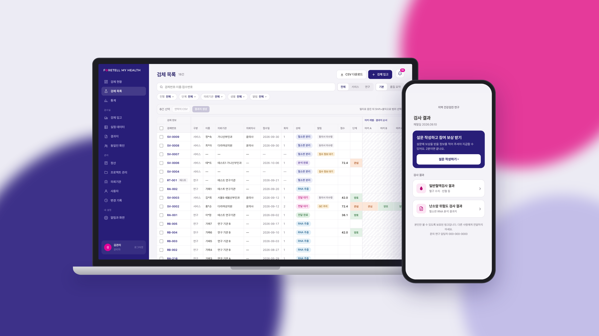
스프레드시트, 스크립트, 디자인 툴에 흩어져 있던 검사 데이터와 결과지 업무를 하나로 모은 웹 포털을 설계하고 구현했습니다. 설계부터 초기 운영 적용까지 약 2주가 걸렸습니다.
검사 업무를 멈추지 않고 전환해야 했습니다. 운영팀이 바로 업무에 사용할 수 있으면서, 실험팀도 익숙한 업무 방식을 해치지 않고 옮겨 올 수 있도록 설계해야 했습니다.
2026년 9월 30일 - 현재 (운영 중)
Product Designer — End-to-end UX/UI 설계 및 AI 활용 구현
분산된 업무와 반복적인 수작업. 데이터 입력부터 결과지 전달까지 여러 도구를 오가며 같은 정보를 반복해서 입력하고 정리해야 했습니다.
업무 현황과 변경 이력 관리의 어려움. 검체별 진행 상황과 마감을 확인하기 어려웠고, 데이터 수정 이력과 접근 권한도 관리되지 않았습니다.
결과지 업무를 직접 수행하며 문제를 찾고, 실험 경험이 있는 운영 담당자와 데이터 관리 및 실험팀의 의견을 반영했습니다. 기존 업무 방식을 고려해 설계 방향을 정하고, 구현한 화면을 테스트 데이터로 검증했습니다.
흩어져 있던 확인과 기록 업무를 하나의 포털에서 처리하도록 설계했습니다.
익숙한 표 형태를 유지하면서 반복 입력을 줄이는 기능을 더했습니다.
받는 사람에게 필요한 결과만 보여 주고, 기기에 맞게 화면 구성을 바꿨습니다.
실험팀은 동일한 값을 튜브마다 반복 입력해야 했습니다. 두 가지 방식을 시험용 데이터로 구현하고, 실험 경험이 있는 운영 담당자와 비교해 기존 표를 유지하는 방식을 선택했습니다.
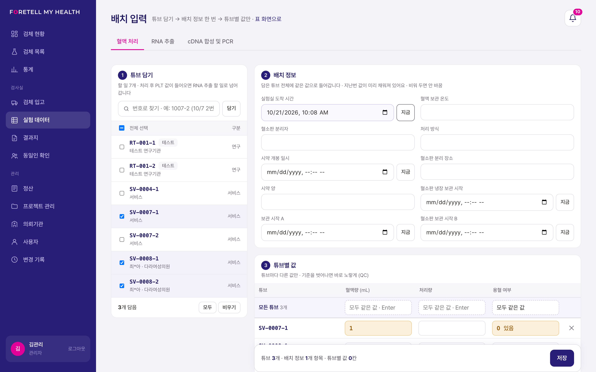
미채택 대안
입력 화면이 두 곳으로 나뉘면서, 어느 화면을 사용할지 판단해야 하는 부담이 생겼습니다.
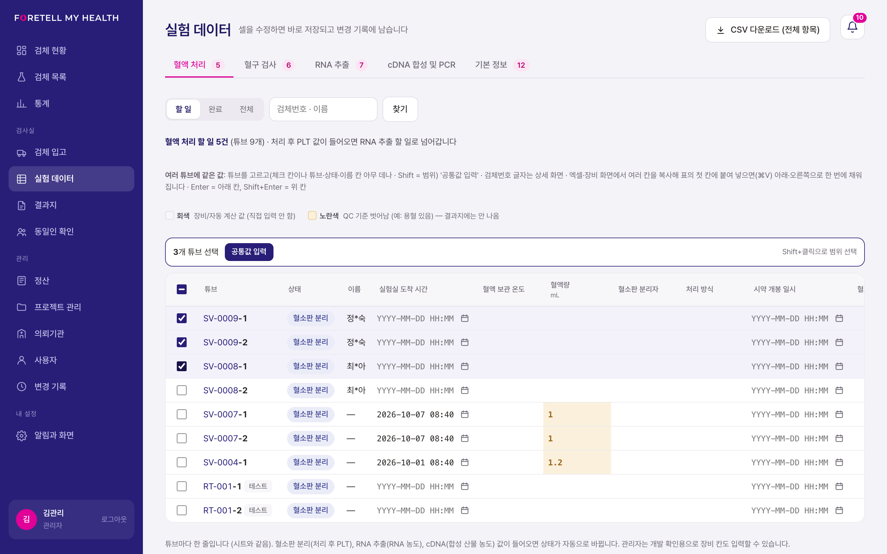
① 튜브 선택
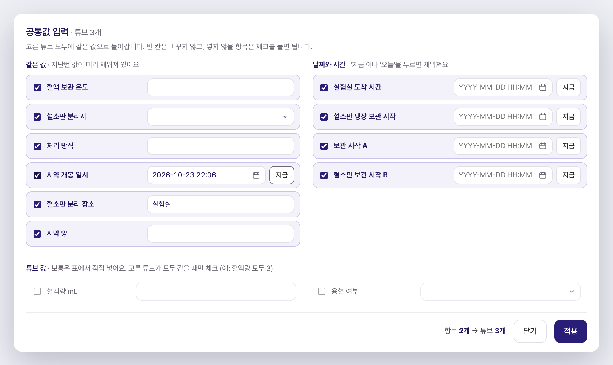
② 공통값 입력
결과지는 전달 후 수정하기 어려워 승인 전 확인이 중요했습니다. 결과지와 검사값을 한 화면에서 비교하고, 값이 변경되면 결과지를 다시 생성한 뒤 승인하도록 설계했습니다.
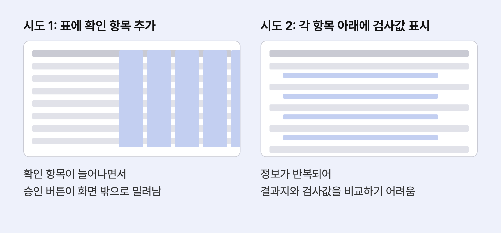
당시 화면을 남기지 않아 구조만 다시 그렸습니다
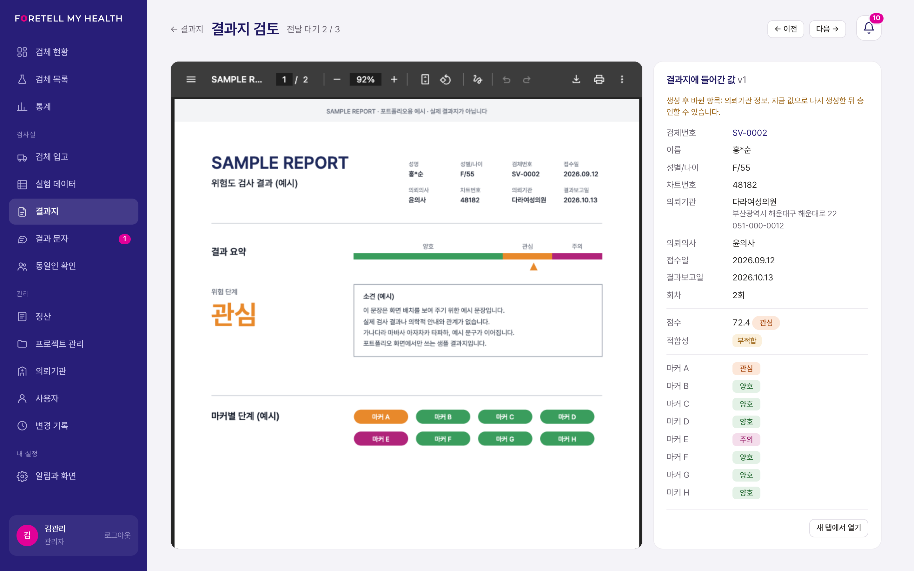
결과지 검토 화면 (샘플 결과지, 가상 데이터)
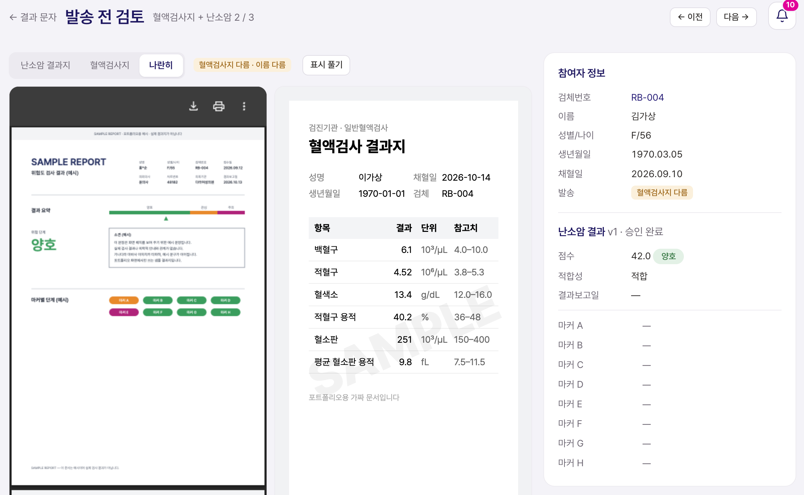
같은 화면 구성을 참여자용 결과지 검토에도 적용했습니다.
기존에는 칸반 보드에서 검사 진행 상태를 관리하고, 검체별 마감일을 따로 확인해야 했습니다.
실험 데이터에 따라 검사 단계와 마감일을 자동으로 집계해, 운영팀이 우선 확인할 검체와 지연 현황을 한눈에 파악하도록 설계했습니다.
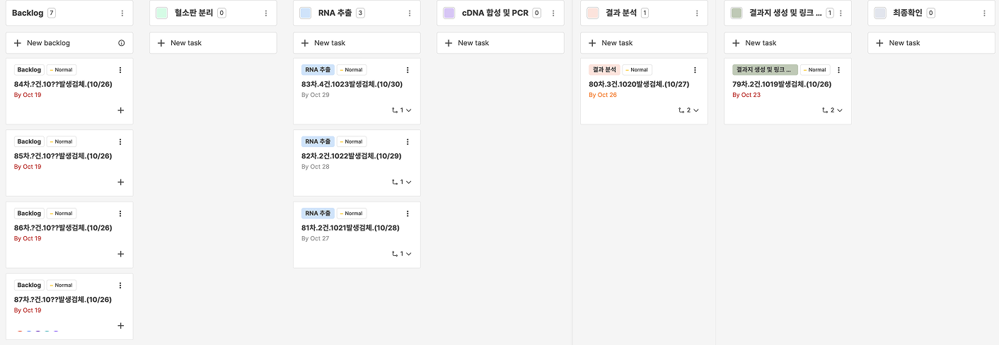
검사 단계가 바뀔 때마다 카드를 직접 옮기고 검체별 마감일을 별도로 확인
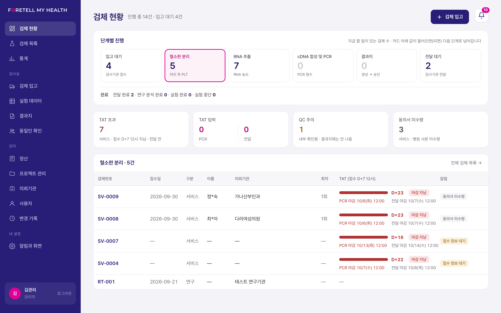
실험 데이터에 따라 검사 단계가 자동으로 변경되고 검체별 마감일과 지연 현황을 한 화면에 표시
"실험 데이터만 올라오면 다음 단계로 저절로 넘어가니까, 트래킹이 훨씬 편해졌어요"
— 운영 담당자
연구 참여자는 성별과 결과 수신 동의 여부에 따라 제공받는 검사 결과가 다릅니다. 결과지 제작과 전달 업무에서 발견한 문제를 바탕으로 참여자별 결과 화면을 설계했습니다.
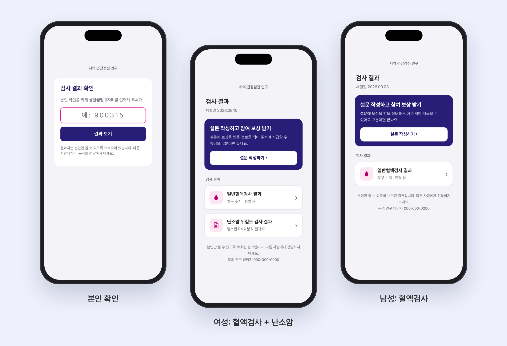
표를 그대로 줄이지 않고, 휴대폰 너비에 맞게 정보의 순서와 모양을 다시 정했습니다.
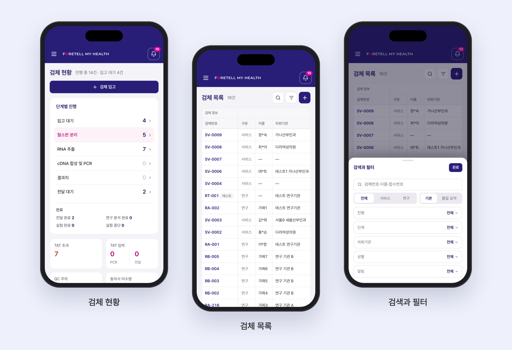
두 사람이 같은 데이터를 수정하면, 기존 변경 사항을 덮어쓰지 않도록 안내합니다.
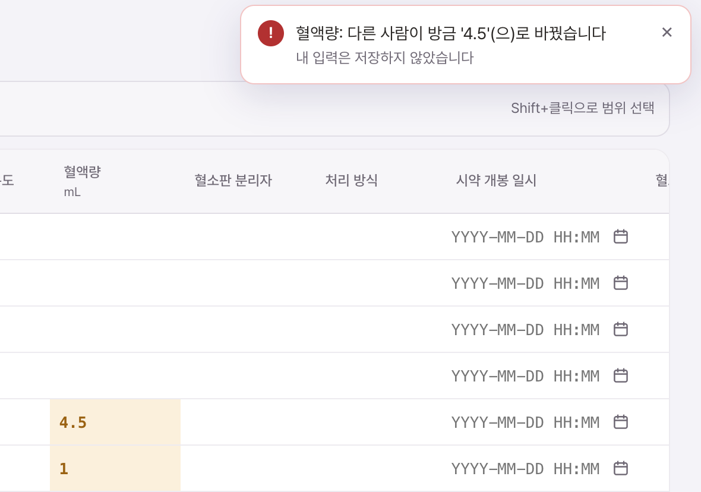
브라우저에 따라 다르게 표시되던 날짜 입력 형식을 동일하게 적용했습니다.
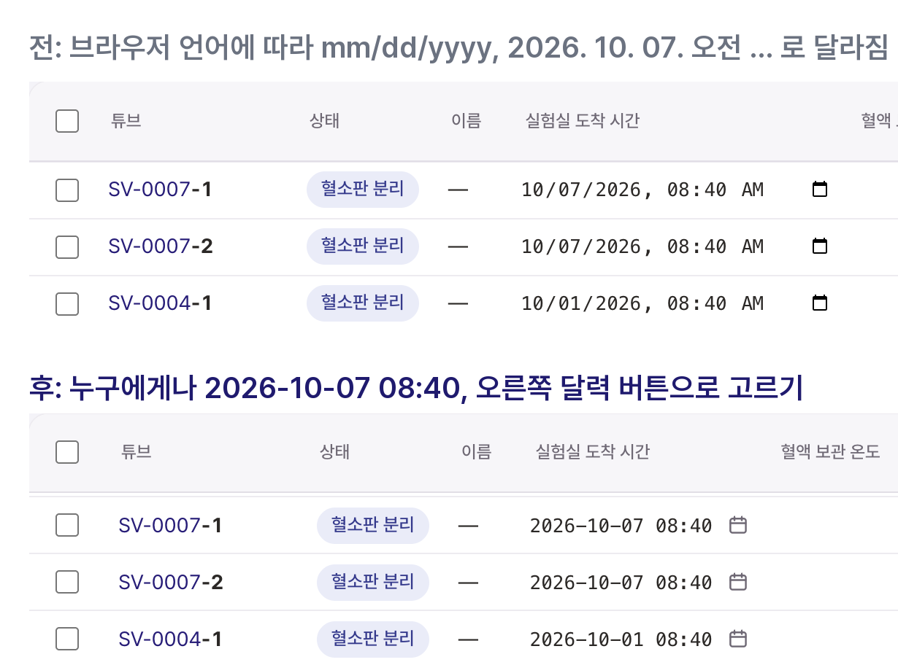
누가 어떤 검체의 값을 수정했는지, 변경 전후 내용을 기록하고 확인할 수 있습니다.
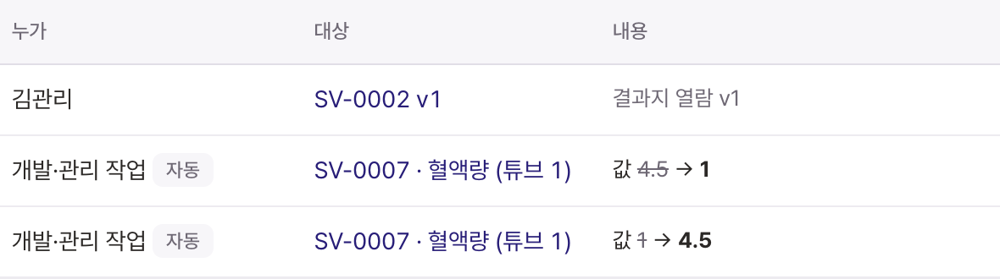
결과지를 정정할 때 변경된 항목과 사유, 건수를 요약해 확인합니다.
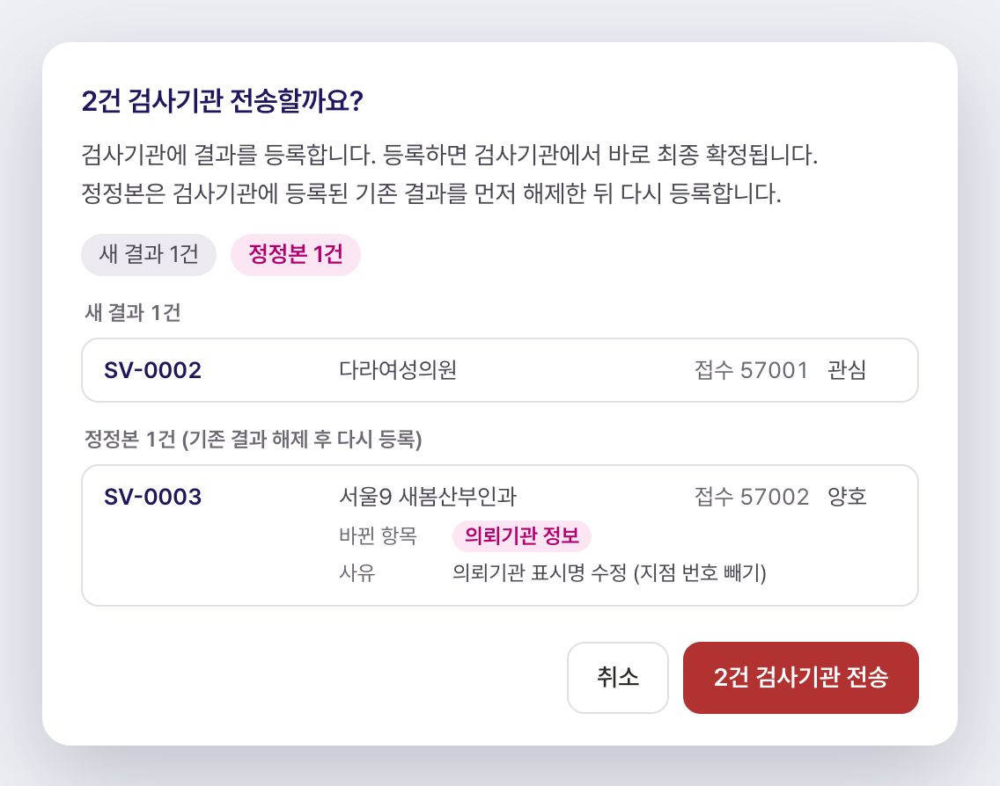
여러 도구를 오가며 처리하던 결과지 생성부터 검토, 승인, 전달까지 하나의 포털로 연결했습니다.
두 가지 입력 방식을 구현해 동료와 비교하고, 운영 과정에서 발견한 문제를 반영해 설계를 개선했습니다.
검사값과 점수가 정확해야 결과 화면도 믿고 사용할 수 있습니다. 화면을 설계하는 것만큼 데이터의 정확성을 확인하는 일도 중요하다는 것을 배웠습니다.
AI를 활용해 설계안을 빠르게 구현하고, 실제 화면에서 동작을 확인하며 반복적으로 개선했습니다.